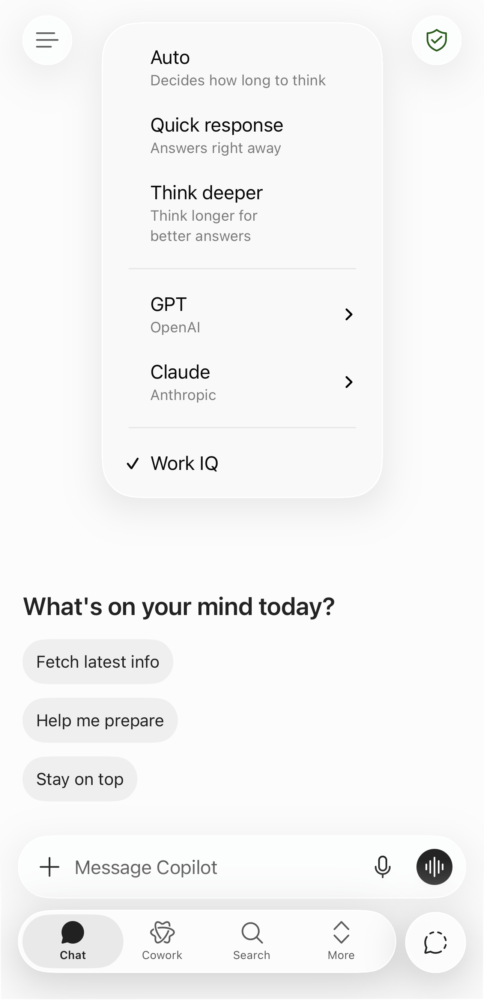

Microsoft Copilot: Work IQ — When to Leave It On (and When It Picks Up Junk)
Quick sibling to the Auto / Think deeper post. Same menu, different switch.
Up top you’ll see Auto, Quick response, Think deeper, then GPT / Claude — and often a check for Work IQ. That one isn’t a “smarter model.” It’s whether Copilot may pull your work context (mail, files, chats, meetings) into the answer.
Leave it on when the answer should come from your Microsoft 365 world. Turn it off when you want a clean outside answer — or when last week’s noisy thread would just pollute the draft.

Rule of thumb
| Work IQ | Use when | Skip when |
|---|---|---|
| ON | “What did we decide…”, prep from my thread or file, status from my meetings | You need a clean outside / public answer |
| OFF | Definitions, vendor compare, industry news, scratch thinking, paste-only tasks | You don’t want a stale CC thread in the answer |
One habit: glance at Work IQ before you hit send — same muscle as opening the model menu before a hard task.
60-second check
- Is the answer in my mail/files/chats/meetings, or on the open web / this paste?
- Flip Work IQ on or off before you type.
- If the reply cites a weird old chat or the wrong project → wrong switch or wrong scope. Redo with it off (or with one file attached on purpose).
Same prompt, two runs (optional drill)
Ask once with Work IQ on, once off. Note what work sources it leaned on. If ON invents a project story from stale mail, that’s your teaching screenshot for next time — redact names, keep the lesson.
That’s it. Model menu for how hard it thinks. Work IQ for whose world it reads.
Sibling post
Microsoft Copilot: stronger models than Auto — same menu, for when to leave Auto and pick Think deeper.